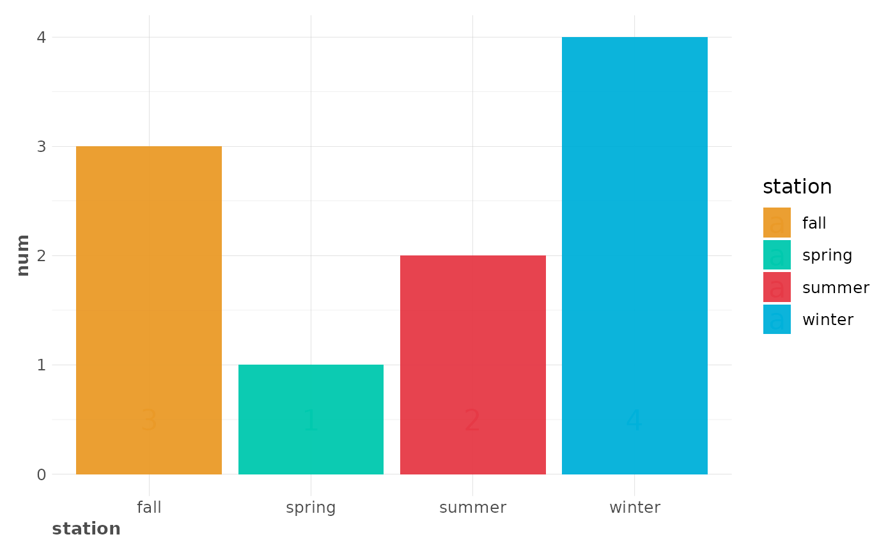
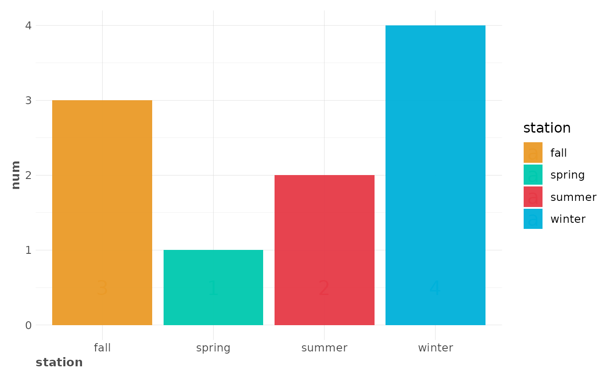

This function lets the user use pre-defined default colours.
Check your lares_pal()$labels scale. Feel free to use
gg_vals() to debug colours used in latest plot.
Usage
gg_fill_customs(column = "fill", ...)
gg_colour_customs(column = "colour", ...)
gg_text_customs(column = "colour", ...)
gg_vals(layer = "fill", column = layer, cols = NULL, ...)Arguments
- column
Character. Select any of "fill" or "colour" to use on your
lares_pal()$labelspalette.- ...
Allow additional parameters not used.
- layer
Character. Select any of "fill", "colour", or "label" to get the layer containing the colours labels you wish to colour.
- cols
Data.frame. Customize colour palette with a data.frame. Must contain values, fill, and colour columns.
Details
Notice that when the layer defined is any of GeomPoint, GeomLine,
GeomText or GeomLabel, gg_colour_customs() will force
column = "fill" parameter.
See also
Other Themes:
lares_pal(),
plot_palette(),
theme_lares()
Examples
library("ggplot2")
# Generic plot function to run examples to
run_plot <- function(add_fxs = TRUE) {
p <- data.frame(station = c("spring", "summer", "fall", "winter"), num = 1:4) %>%
ggplot(aes(x = station, y = num, fill = station)) +
geom_col() +
geom_text(aes(y = 0.5, label = num, colour = station), size = 6)
if (add_fxs) p <- p + gg_fill_customs() + gg_colour_customs()
return(p)
}
# Default colours
run_plot()
 # Check last colours used
gg_vals("fill", "fill")
#> spring summer fall winter
#> "#00C9AE" "#E63946" "#EA9A28" "#00B1DA"
gg_vals("colour", "colour")
#> spring summer fall winter
#> "#00C9AE" "#E63946" "#EA9A28" "#00B1DA"
# Change any default colour
options("lares.colours.custom" = data.frame(
values = c("summer", "winter"),
fill = c("pink", "black"),
colour = c("black", "white")
))
run_plot()
# Check last colours used
gg_vals("fill", "fill")
#> spring summer fall winter
#> "#00C9AE" "#E63946" "#EA9A28" "#00B1DA"
gg_vals("colour", "colour")
#> spring summer fall winter
#> "#00C9AE" "#E63946" "#EA9A28" "#00B1DA"
# Change any default colour
options("lares.colours.custom" = data.frame(
values = c("summer", "winter"),
fill = c("pink", "black"),
colour = c("black", "white")
))
run_plot()
 # Check last colours used
gg_vals("fill", "fill")
#> spring fall summer winter
#> "#00C9AE" "#EA9A28" "pink" "black"
gg_vals("colour", "colour")
#> spring fall summer winter
#> "#00C9AE" "#EA9A28" "pink" "black"
# Reset to default colours
options("lares.colours.custom" = NULL)
# Notice you can use 'pal = 4' argument on theme_lares() too
run_plot(add_fxs = FALSE) + theme_lares(pal = 4)

# Check last colours used
gg_vals("fill", "fill")
#> spring fall summer winter
#> "#00C9AE" "#EA9A28" "pink" "black"
gg_vals("colour", "colour")
#> spring fall summer winter
#> "#00C9AE" "#EA9A28" "pink" "black"
# Reset to default colours
options("lares.colours.custom" = NULL)
# Notice you can use 'pal = 4' argument on theme_lares() too
run_plot(add_fxs = FALSE) + theme_lares(pal = 4)
